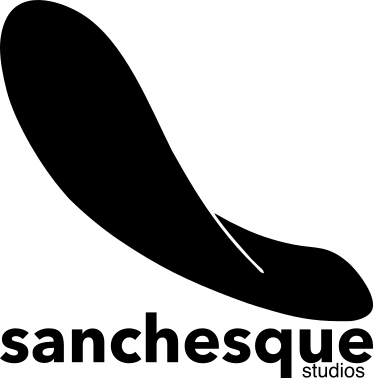

Local talent
Put the islands' remarkable talent —including those who have moved away— to work on products that travel the world from the Canaries.
digital creative studio · canary islands
We make digital work —from software to events and design— with the islands' mark on every project.

A digital creative studio based in the Canary Islands. We work across software development, design and fully digital events.
Put the islands' remarkable talent —including those who have moved away— to work on products that travel the world from the Canaries.
Show how much value the islands can create.
Connect the people and companies that make up the Canary Islands' digital scene.
For many of us, our roots shape who we are, and a studio with a personality of its own is no different. It was founded on a clear principle: build from the Canary Islands, give something back to them, and leave a chola mark —the islands' word for flip-flops— on everything we make. Above all, the name is a nod to every mother who gives everyday objects names her children never forget.
Sanchesque is how many islanders say, and bend, the brand name Sancheski (the Canarian Language Academy's note is in Spanish). You still hear older locals say «sanchesque» instead of the proper name. Sancheski was the first company to sell skateboards in Spain, back in the sixties, so the brand became the everyday word for them.
So, is the logo a skateboard?
Call it a skatechola: the chola is a hallmark of the islands, and the skateboard gave the studio its name. It can't be just one or the other —that's where its character comes from.
A digital concierge for hotels: an assistant that answers guests instantly —opening hours, facilities, services— using only the hotel's own verified information.
Its decision model is ultra-fast and runs locally, on low-cost devices installed at the hotel itself, so each hotel controls its assistant and its data from end to end.
In the works. If you run a hotel and want an early look, write to tabaibi@sanchesque.com.
Tell us what you're working on. We reply quickly, with concrete ideas: